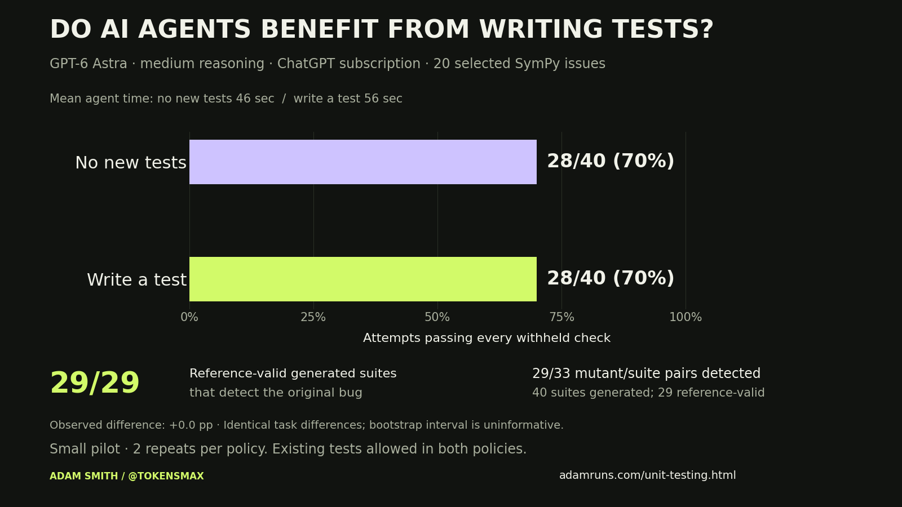

Fix the issue.
Inspect the repository, change production code, and run existing tests. Do not add new tests, assertions, or ad-hoc test scripts.
FIELD NOTES / EXPERIMENT 001
A correct fix is one outcome. A useful regression test is another. I measured both.
01 / THE RESULTS
Both testing policies passed every acceptance check in 28/40 attempts. All 29 generated suites that passed on the reference fix detected the original bug. This is a selected SymPy pilot, not a verdict on all unit testing.

| Measure | No new tests | Write a test |
|---|
The draft and chart describe only the measured pilot. Nothing is posted automatically.
02 / THE EXPERIMENT
I adapted the question from Rethinking the Value of Agent-Generated Tests: does requiring an agent to write a test improve its patch, or mainly change its process?
Inspect the repository, change production code, and run existing tests. Do not add new tests, assertions, or ad-hoc test scripts.
The same issue and tools, plus a new behavioral test that the agent must execute and leave behind. Existing tests remain available.
Select 20 SymPy issues from SWE-bench Verified after confirming that withheld acceptance tests expose the original bug and pass with the reference fix. Preserve exclusions.
Use fresh repository copies and two repetitions per policy, in a fixed shuffled order. Hold GPT-6 Astra, medium reasoning, Codex CLI, tools, and the five-minute time cap constant.
Apply it to a clean copy, then run the official issue’s withheld FAIL_TO_PASS and PASS_TO_PASS checks. Generated tests cannot change the grader. Skips and collection errors do not count as passes.
Run each generated suite against the agent’s patch, the reference fix, the original bug, and prevalidated mutations of the reference fix. Separate useful detection from invalid or failing test suites.
03 / SHOW YOUR WORK
Inspect the protocol, exact issues, task-level outcomes, and reproducible runner. Authentication files and unrelated private context are excluded from exports.
| Issue | Policy | Repeat | Result | Time |
|---|---|---|---|---|
| No attempts recorded yet. | ||||
04 / READ THIS BEFORE SHARING
Twenty selected historical issues from one Python repository cannot tell us whether unit testing is worth it for every team. Public benchmarks may appear in model training data. Acceptance tests can also demand behavior beyond an issue’s example: the Unicode-printing case includes Unicode digits as well as Greek letters. Passing this benchmark is an operational measure, not proof that every issue is perfectly specified. Two runs of the same issue do not become two independent projects.
This uses Codex CLI and local macOS/Python grading, not the paper’s mini-SWE-agent and official Docker environment. The five-minute cap is part of the treatment: time spent writing tests comes from the same budget. Results include policy violations and interrupted attempts explicitly.
Mutation scores cover only the selected, detectable faults. They do not measure production incidents avoided or long-term maintenance costs. The no-new-tests condition still has existing tests; its future regression protection is not zero.
A small or uncertain difference does not prove equivalence. I would need more varied tasks, independent review, and a prespecified practical margin before making that claim.